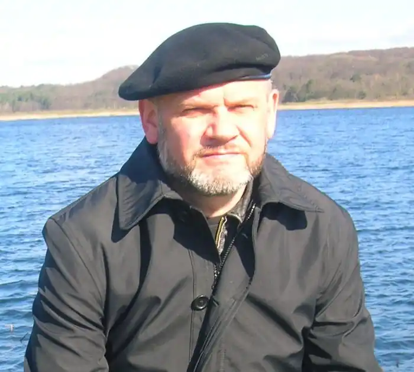
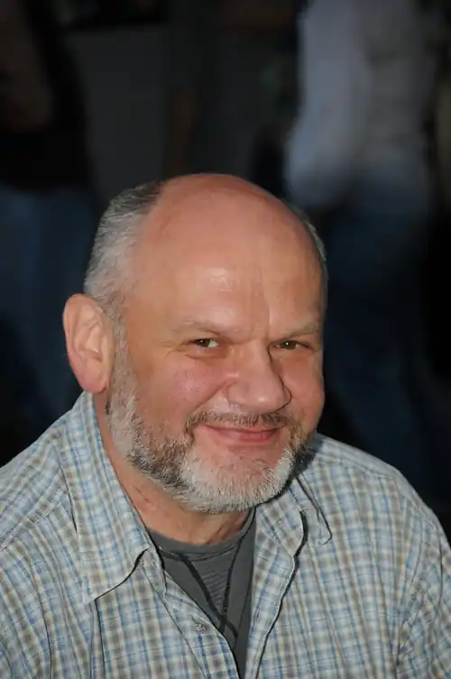

Неборак Віктор Володимирович
(Нар. 9 травня 1961 р.)
український поет та дослідник, засновник і "прокуратор" одіозного літугрупування "Бу-Ба-Бу" та "Пси святого Юра", з яких починається українська постмодерна поезія 90-х. Неборак — автор експериментальних текстів та рок-музики (аудіокасета "Неборок", 1995), куратор проектів "Реберітація" та "Третє тисячоліття", які відчутно вплинули на формування в сучасному Львові нового мистецького середовища. Автор поетичних збірок "Бурштиновий час" (1987), "Літаюча голова" (1990), "Alter Ego" (1993), "Розмова зі слугою" (1994), "Епос про тридцять п´яту хату" (1999), роману "Базилевс", есеїстичних та літературознавчих збірок "Лексикон А.Г."(2015), "Колишній/інший" (2013). Неборак є лауреатом премії ім. Павла Тичини (2002) за книгу поезій "Літостротон", премії ім. Богдана Лепкого (2007) за книгу прози "Базилевс", премії "Глодоський скарб" (2008). Віктор Неборак народився 9 травня 1961 року у смт. Івано-Франкове Яворівського р-ну Львівської обл. Батько Віктора – Володимир Неборак народився у селі Романівка Тальнівського району, там родина мешкала до 1937 року, а далі змушена була переїхати до Західної України, на Львівщину. Де батько і зустрів свою кохану. Тому сам письменник вважає себе символом Соборності Східної і Західної України. 1983 р. Віктор Неборак закінчує українське відділення філологічного факультету Львівського державного університету ім. Івана Франка. Пізніше навчається в аспірантурі Інституту літератури ім. Т. Г. Шевченка НАН України, працює лаборантом та науковим співробітником Львівського відділення Інституту літератури та Інституту Івана Франка НАН України. З 1993 по 2000 рік читає курс лекцій з української літератури в рідному університеті ім. Івана Франка. Поетичну творчість Віктора Неборака переважно розглядають у ширшому контексті літературного угруповання Бу-Ба-Бу (засноване 17 квітня 1985 року), куди, крім нього, належать також Юрій Андрухович та Олександр Ірванець. Неборак є одним із співзасновників цього угруповання, творцем самої його назви (абревіатура від запропонованої Андруховичем тріади "бурлеск — балаган — буфонада"). "Бу-Ба-Бу — це передусім значна частина мого життя.17 квітня буде рівно30 років, як ми вперше зустрілися з Сашком Ірванцем біля Львівськогооперного театру. Нас звів Андрухович, але сам не приїхав. Ми з Сашком швидко порозумілися. І основою цього порозуміння була поезія ісухе вино. І оскільки саме Юрко нас звів, цей день ми вирішили вважати днемзаснування Бу-Ба— Бу. Андрухович отримав звання Патріарх, тому, що він трохи старший за нас, з поваги до нього. Ірванець – то Підскарбій. Він повинен був за все існування команди назбирати нам багато грошей, правда, у нього нічого не вийшло. Я став Прокуратором", – згадує Віктор Неборак. Своєрідним апогеєм Неборакового бубабізму стала збірка поезій Віктора "Літаюча голова" (1990) — напрочуд вітальна й поліфонічна "книжка-карнавал", з моменту виходу якої в українській літературній критиці починають говорити про постмодернізм і необароко. З 1991 року – Неборак входить доНаціональної Спілки письменників України,а з 1997 – до Асоціації Українських Письменників. У Львові Неборак займається продюсеруванням поезо-симфо-рок дійств, організовує, продюсує і модерує фестивалі, театральні акції ("Вивих", Львів, 1992; "Альтернатива", Львів, 1994, "Реберітація", Львів, 1992—1994). 1994 року створюється літературна майстерня "Пси святого Юра", учасником якою також був і Неборак. Ідея створення групи належала Юрію Покальчуку, Юрію Андруховичу та Ігореві Римаруку. Єдиним окремим виданням групи був альманах "Пси святого Юра" (Львів, 1997 р.), де було зафіксовано первинний склад об’єднання. Впродовж п'яти років (з січня 1995 р. до грудня 1999 р.) Неборак організувує і веде у Львівському музеї етнографії та художнього промислу популярний цикл літературних вечорів "Третє тисячоліття" (58 авторських вечорів сучасних українських письменників, у тому числі і з діаспори, на основі яких були створені літературні програми для Львівського телебачення). Важливими для формування сучасного мистецько-літературного середовища Львову є експерименти Неборака з рок-музикою, здійснювані у першій половині 90-х років (аудіокасета "Неборок", 1995). Микола Рябчук вважає, що "поетичний карнавал Віктора Неборака — це ще й добре організований спектакль, з прекрасною режисурою… з питанням з-поміж питань у кінці, в останньому вагоні карнавальної кавалькади, питанням, заради якого, можливо, й розігрується все це дійство". Віктор Неборак є луреатом премії ім. Павла Тичини (2002) за книгу поезій "Літостротон", премії ім. Богдана Лепкого (2007) за книгу прози "Базилевс" та премії "Глодоський скарб" (2008). Нагороджений Почесною відзнакою Міністерства культури і мистецтв України "За багаторічну плідну працю в галузі культури" (2003). Одружений, виховує трьох дочок. Книга есеїв "Колишній інший" 2013 р. описує час від дитинства Віктора Неборака до періоду його вчителювання на Донбасі, тоді поет 9 місяців працював вчителем української мови та літератури в училищі у Ворошиловградській області. З нагоди ювілею 30-річчя "Бу-ба-бу" навесні 2015 року Неборак перевидає оновлене третє "Введення у Бу-Ба-Бу (хронопис кінця тисячоліття)" та нову збірку своїх літературознавчих есеїв "Лексикон А.Г." Бібліографія: 1987. Бурштиновий час: Поезії. 1990. Літаюча голова: Вірші. 1993. Alter Ego: Поезії 1980 — 1990 років. 1994.Розмова зі слугою. 1995.Доповнена біографія // БУ-БА-БУ. Т.в.о. /…/ри. 1998.Повернення в Леополіс. 1999.Епос про тридцять п'яту хату. 2001. ЛІТОСТРОТОН (книга зібраного). 2001,2003,2015. Введення у Бу-Ба-Бу. Хронопис кінця тисячоліття (есеїстика). 2001.Перечитана "Енеїда" (спроба сенсового прочитання "Енеїди" Івана Котляревського на тлі зіставлення її з "Енеїдою" Вергілія). Монографія. 2005. "Літаюча голова" та інші вірші :: The Flying Head And Other Poems by Viktor Neborak. 2005. Повторення історій. 2006. Базилевс. Нововіднайдені розділи Львівської Книги Переміщень, переписаної 2005 року. 2007. А. Г. та інші речі (есейчики, популярна критика, дискурс). 2009. Вірші з вулиці Виговського. 2010. Повільне читання. Віршів Тараса Шевченка, Івана Франка, Павла Тичини, Евгена Маланюка, Богдана Ігоря Антонича та новел Василя Стефаника: монографія 2013. Літаюча голова. Вибрані вірші. 2013. Колишній, інший... / автобіографічний текстиль. 2015. Лексикон А. Г.